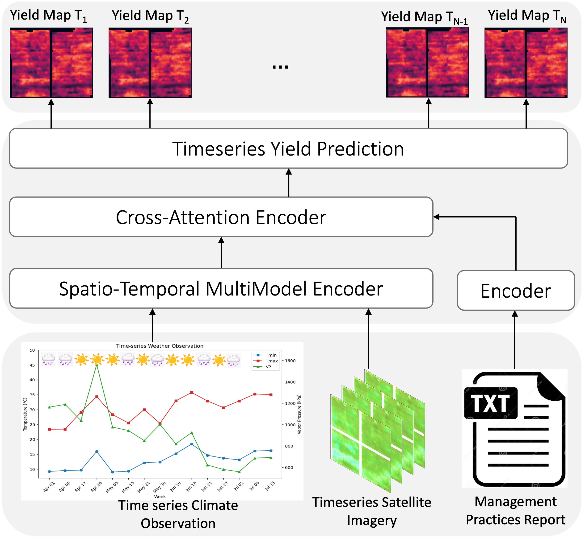

IEEE JSTARS · 2026
CMAViT: Integrating Climate, Management, and Remote Sensing Data for Crop Yield Prediction With Multimodel Vision Transformers
A multimodal Vision Transformer that jointly encodes satellite time-series, seasonal climate, irrigation management records, and soil properties through cross-modal attention for vineyard and county-level yield prediction — now published in IEEE Journal of Selected Topics in Applied Earth Observations and Remote Sensing.
- Achieved ~12% lower RMSE than single-modality baselines on California county-level grape yield prediction.
- Cross-attention between climate and management tokens captures how irrigation decisions modulate heat-stress response — a relationship invisible to unimodal models.
- Temporal ViT encoding preserves inter-annual variability patterns that recurrent baselines (LSTMs) systematically underfit.